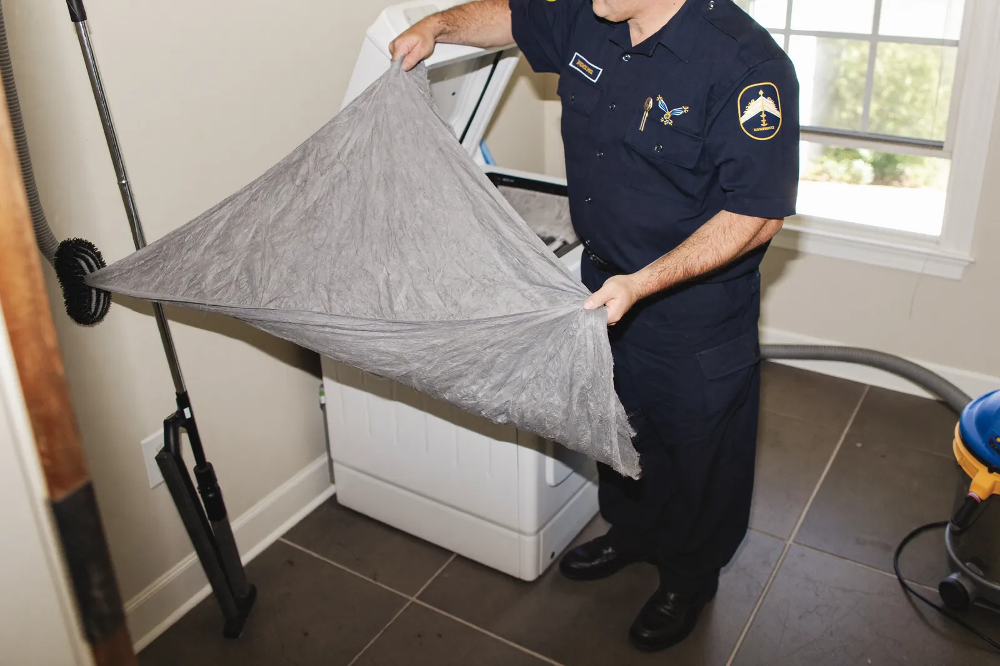

We clear the whole run — dryer to exterior hood, including roof terminations most homeowners can never reach — and confirm airflow before we leave.

Dryer vent cleaning in San Antonio is not a housekeeping chore; it is fire prevention. The NFPA attributes roughly 14,700 home fires a year to clothes dryers, and more than a third of those start with a vent that nobody cleaned. We clear the complete run for homes across San Antonio and Bexar County and verify the airflow at the exterior hood before we pack up.
We disconnect the dryer, then run a rotating brush on a flexible rod the full length of the duct while a vacuum holds the run under suction. Lint comes out in a controlled direction rather than blowing into your laundry room. We clean the transition hose behind the dryer, the wall or ceiling duct, and the exterior termination.
Then we check the hood itself. A flapper stuck shut by matted lint or blocked by a bird nest undoes everything else, and on a roof-terminated run that is the part you have never seen. We finish by reconnecting the dryer, running a cycle, and confirming strong airflow outside.
A household doing several loads a week should book this annually. Large families and homes with long attic or roof runs should not stretch it further.
Every load sheds lint, and the lint trap catches only part of it. The rest travels into the duct, where it snags on ridges, elbows and joints. Each snag narrows the opening, which slows the airflow, which lets even more lint settle. It compounds quietly, which is why the first symptom is usually a drying time that crept up so gradually you stopped noticing.
San Antonio adds two problems. Many homes here vent up through the attic and out the roof, which means a long run with multiple elbows and a termination you cannot inspect from the ground. And high outdoor humidity for much of the year means the lint that settles is slightly damp, so it packs into a dense mat instead of staying fluffy enough to blow clear.
We give you one firm number after a short walkthrough rather than a phone guess that changes once the tech is in the attic. Be wary of any ad quoting a whole house before anyone has seen it.
Look behind your dryer. Smooth rigid metal pipe, or the short semi-rigid aluminum accordion, is what current code wants: the interior is smooth, lint has nothing to catch on, and it will not burn.
If you see white or silver plastic-and-wire flexible hose, that is vinyl or foil duct. It is common in older San Antonio homes and in DIY hookups, it collects lint in every ridge, it crushes when the dryer is pushed back against the wall, and it is combustible. Modern code does not allow it for dryer exhaust. If we find it, we will tell you — swapping it for rigid metal is an inexpensive fix that meaningfully lowers your fire risk.
Cleaning a vinyl duct still helps, but it will load up again faster than metal. Ask us about it when you book.
Once a year for a typical household. Go to every six months if you run several loads a day, dry pet bedding regularly, or have a long attic or roof-terminated run — all common in San Antonio homes.
You can clear the first few feet with a brush kit from a hardware store, and that is worth doing. What you cannot reach is the middle of a long attic run or a roof termination, which is exactly where San Antonio vents pack up. If your drying times have not improved after a DIY pass, the blockage is further down the run.
Loads needing two cycles, clothes coming out hot rather than dry, a humid or hot laundry room, a burning smell during a cycle, and an exterior flapper that barely opens. Any one of those is worth a call; two together means do not keep running it.
Yes. A large share of San Antonio homes vent through the attic and out the roof, and that termination is the part homeowners never inspect. We clean the run from both ends and check the hood for matted lint and bird nests, which are common up there.
One visit clears the full run and confirms airflow at the hood. Book it on its own or add it to a duct cleaning for your San Antonio home.